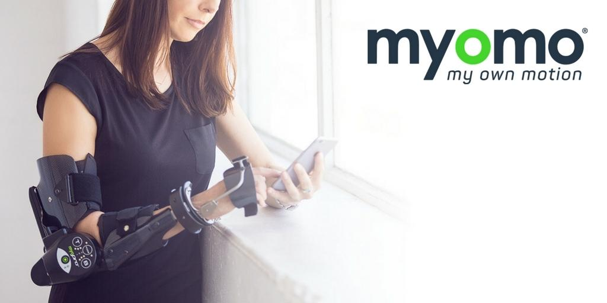
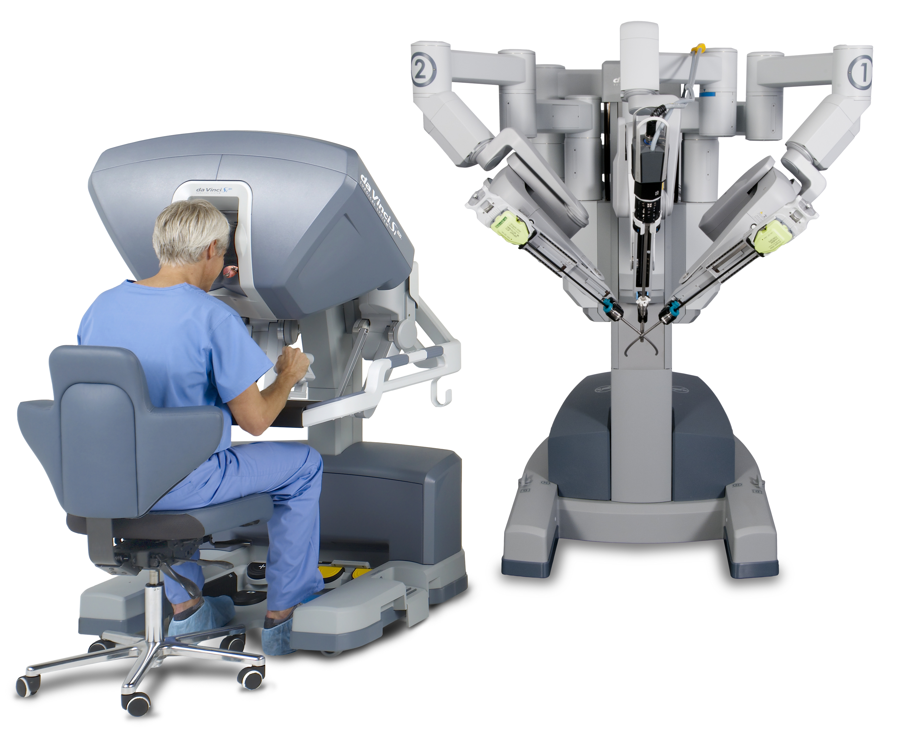
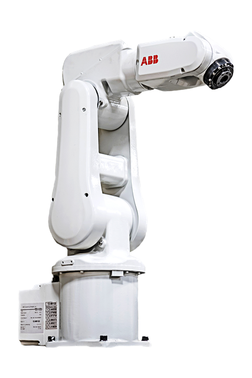

美国纽约城市大学机械工程系苏浩教授招收2名博士生和1名博士后,从事可穿戴机器人，外骨骼，机器人假肢，手术机器人，软体机器人领域的研究。博士生将获得全额奖学金资助，每年24,000美金生活费并免除学费。优秀的硕士或者本科生也可以得到部分奖学金资助。开始时间为2017年秋季或2018年春季学期。我们实验室在手术机器人，外骨骼机器人和软体机器人方向上做着前沿的研究工作。欢迎有机械，电子，计算机，自动化和相关学科的申请人请将简历，成绩单，设计作品等Email给苏浩教授 haosu.ieee@gmail.com. 如果想了解更多的信息，可以访问实验室主页.
苏浩教授本科毕业于哈尔滨工业大学，博士毕业于伍斯特理工大学，哈佛大学博士后，曾在飞利浦北美研发中心任职科学家。苏教授是IEEE国际机器人和自动化大会的副主编，IEEE生物医学工程大会的副主编，IEEE Robotics and Automation Siciety的Design and Mechanism委员会的Junior Chair，Frontier in Robotics and AI的编委。曾经获得国际机器人和自动化大会最佳医疗机器人二等奖，美国Link Foundation青年科学家奖，飞利浦北美研发中心科技转换奖，拥有8项国际专利申请。
我们的实验室在进行或将开展和哈佛大学，哥伦比亚大学医学院，纽约大学医学院，康奈尔大学等美国前10的医院进行康复机器人和手术机器人方面的研究。实验室正在引进da Vinci robot Research Kit，开展手术机器人的研究。纽约城市大学位于纽约曼哈顿，是美国第一大城市，是生物医学和机器人技术的重要研发地点。苏浩教授大力支持各种职业发展路线，可以推荐博士或者博士后去哈佛MIT斯坦福等高校进一步发展。凭借和工业界的合作关系，可以推荐学生去著名机器人和医疗器械公司(ABB, Intuitive Surgical, Medtronic, Philips, Siemens, General Electric)实习或者就业.纽约城市大学的Zahn Innovation Center是纽约著名的企业孵化器，提供创业和产业化科研成果的机会。
We are seeking PhD students and postdoc fellow to perform research on wearable robots, robotic exoskeleton/prosthetics, surgical robots and soft robots. The perspective students or researchers will work with Prof. Hao Su and his team in the Mechanical Engineering Department at The City College of New York. Our Mechanical Engineering is ranked 87th. You will have the opportunity to work with doctors and researchers from Harvard University, Columbia University, New York University, Cornell University. Students can be admitted in 2017 Fall or 2018 Spring. PhD students will receive full tuition and stipend support. Undergraduate or Master students with strong skills will be considered with financial support. The postdoc fellow position is available in September 2017. Students looking for internship are also welcome.
Required
- A Bachelor’s degree in mechanical, electrical engineering, robotics, computer science, aerospace engineering, or a related field;
- Strong background in at least one of these areas: mechanical design, mechatronics, electric or pneumatic motor design and control, embedded system;;
- Proficiency in Matlab and C++ or C.
Preferred
- Master's degree in robotics related field
- Experience on SolidWorks or CAD design software
- Proficiency in C, C++, or Python
- Experience on soft robots, wearable robots, or surgical robots
- Experience on Robot Operating System (ROS)
- Demonstrated research experience (i.e., a publication record)
How to apply
Applicants should send (in 1 concatenated document) to Prof. Hao Su at haosu.ieee@gmail.com
1. Brief description of how the applicant's background and interests relate to this project area
2. Curriculum Vitae or resume
3. Representative papers or robotics work.
Lab equipment and collaboration (coming up)
- ABB IRB 120 desktop robot
- da Vinci robot Research Kit
- myomo orthotic arm
  
Career Development in the lab
Prof. Hao Su
provides strong support for different career development of lab members.
- Academic Career: students and postdocs will be supported to pursue advanced degree in top-notch universities or academic positions after the work in our lab.
- Industry Career: students or researchers in the lab will have strong hands-on experince to design mechatronic systems. Because of our strong connection with industry, students or postdocs will be recommended in leading robotics or medical device companies, including ABB, Intuitive Surgical, Medtronic, Philips, Siemens, General Electric.
- Entrepreneurship Career: You will have the opportunity to work with the Zahn Innovation Center, a startup incubator that has created $6M Startups' Revenue and 100 Internships.
About the City Universiy of New York
The City College of the City University of New York is a public college of the City University of New York (CUNY) in New York City. Located in Manhattan, City College's 35-acre Collegiate Gothic campus spans Convent Avenue from 130th to 141st Streets. CUNY graduates include 13 Nobel laureates, a Fields Medalist, a U.S. Secretary of State Colin Powell, and several New York City mayors. Grove School of Engineering was named after the chairman and CEO of Intel Andrew Grove. Approximately 3,300 students pursue degrees at the Baccalaureate, Masters and Ph.D. levels in seven disciplines: Biomedical Engineering, Civil Engineering, Chemical Engineering, Computer Engineering, Computer Science, Electrical Engineering and Mechanical Engineering.